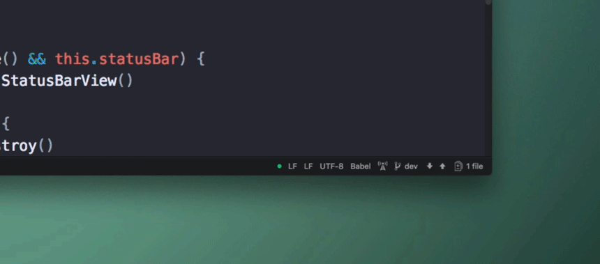
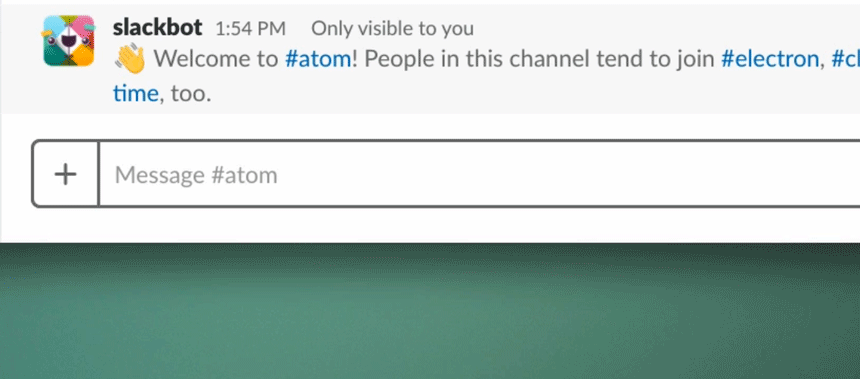
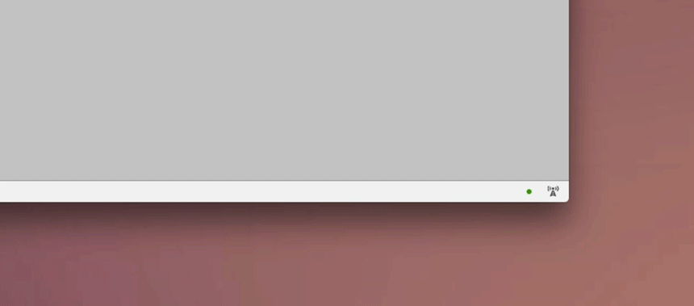
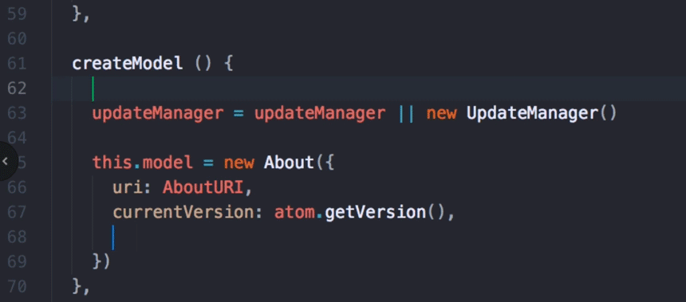
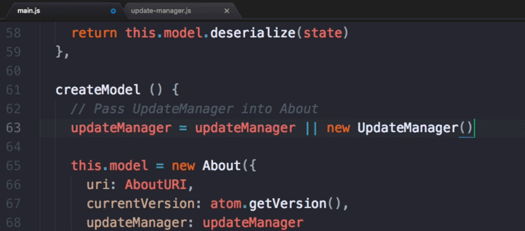

Code together in real time with Teletype for Atom
November 15, 2017 nathansobo
Tweet

Writing code with another programmer is a great way to absorb knowledge, challenge yourself with new perspectives, and ultimately write better software. It can also be a fulfilling way to get to know the mind of another human being. Unfortunately, the logistics of writing code with another programmer can be such a hassle that many people don’t bother. Here are some of the common obstacles:
- Sharing the same physical machine is impossible for remote teams, and can be challenging to organize even when teammates share the same office.
- Cloud-based IDEs and remote
tmuxsessions ask you to move your entire workflow into a hosted environment, which isn’t always possible or desirable. - The connection latency of screen sharing can lead to an awkward dynamic where only one collaborator can comfortably edit.
Social coding shouldn’t have to be this hard! Today, we’re taking a first step toward making it just as easy to code together as it is to code alone with Teletype for Atom. At the dawn of computing, teletypes were used to create a real-time circuit between two machines so that anything typed on one machine appeared at the other end immediately. Following in these electro-mechanical footsteps, Teletype for Atom wires the keystrokes of remote collaborators directly into your programming environment, enabling conflict-free, low-latency collaborative editing for any file you can open in Atom.

Getting started with Teletype
Once you install Teletype via Atom’s settings view or apm install teletype on the command line, you can open a “portal” into your local workspace from the new collaboration menu on the status bar.

Then just share your portal’s secret ID with collaborators via your preferred chat service.

Collaborators can enter your portal by clicking “Join” in the collaboration menu and entering the portal ID.

After joining your portal, collaborators see a new tab in their workspace that lets them view and edit the contents of your active editor. Everyone gets their own cursor, and everyone can type at the same time, but since sharing is at the keystroke-level rather than the pixel-level, participants all keep their own custom key bindings, packages, and themes.

When you share a portal, your code stays on your local disk. As you switch between files, the contents of your current active editor are transmitted to collaborators so they can follow along, but otherwise your workflow will be unchanged.

Implementation details
Conflict-free editing
Collaborative editing is a tricky theoretical problem. To ensure responsive editing, each collaborator maintains their own replica of each document, applying local edits immediately before transmitting them to other collaborators. In the face of concurrency, edits end up being applied in a different order on each replica, but when the dust settles, all replicas need to have the same contents.
After several late nights reading research papers, we ended up deciding to base Teletype on the theoretical framework of conflict-free replicated data types, or CRDTs. Basically, CRDTs are data structures that always converge on the same representation when updated with the same set of operations, even if those operations are applied in different orders. The CRDT for text editing we wrote for the heart of this system is available as a standalone library called teletype-crdt.
Connecting peers
To connect collaborators, we use WebRTC data channels. After an initial handshake that exchanges connection metadata via GitHub’s servers, all data flows over encrypted peer-to-peer connections. Our servers never see your files or edits, which maximizes your privacy and minimizes latency between you and your collaborators, regardless of your proximity to our data centers.
Editor-agnostic client library
The Teletype Atom package implements UI components and Atom-specific integration code, but most of the logic lives in an editor-agnostic library called teletype-client. Our protocols and API may churn for a while as we develop the system, but it should be possible to integrate teletype-client into any web-based application or even package it in an Electron-based server to talk to it from native editors. Supporting inter-operation between different text editors is definitely part of our long term vision.
Carriage return, line feed
For now, Teletype only transmits text, so it’s a good idea to combine it with an application for voice communication. Traditional screen sharing can also be helpful for sharing the state of applications outside of Atom. Ultimately, we want to incorporate these kinds of features directly into the package along with a long list of other improvements.
But rather than waiting for perfection, we are releasing a beta version of this package now, because we think it’s useful today. We’ve been using Teletype to build Teletype for a few months now, happily working together across two continents and three time zones. Daily teletyping has made us happier and more productive, and we hope it will do the same for you and your teammates.
Visit teletype.atom.io to start coding together in Atom today.